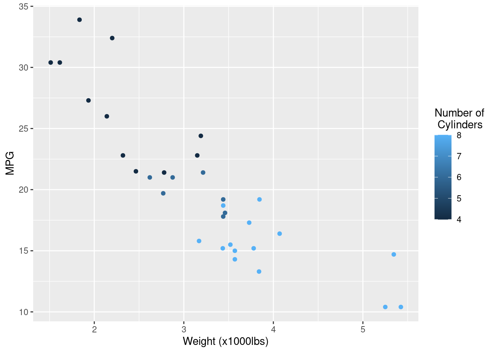

x<- 5Introduction to R
Intro to R
R is a statistical programming language that allows users to do advanced computational analysis. It can store a variety of different data types and then perform computation on them.
Here, we can assign x a value of 5 with:
We can then ask R to recall that value
x[1] 5We can make this more complicated
x <- 5 + 5
x[1] 10x <- 5
y <- x + 5
y[1] 10R can also store vectors (or a list) of variables. They can be various types: numbers, characters, etc.
vector_a <- c(1,2,3,4,5)
vector_b <- c("a","b", "c")We can also use R to access specific values of that array (or list)
vector_a[1][1] 1vector_b[2][1] "b"This can be expanded to tables or data frames. R has some example data that’s loaded by default. One is the cars data set
summary(cars) speed dist
Min. : 4.0 Min. : 2.00
1st Qu.:12.0 1st Qu.: 26.00
Median :15.0 Median : 36.00
Mean :15.4 Mean : 42.98
3rd Qu.:19.0 3rd Qu.: 56.00
Max. :25.0 Max. :120.00 The function summary summarizes the data table for us. We can see there are two columns. We can sample a particular column or row with the index of the table or data frame. For example:
summary(cars[,1]) Min. 1st Qu. Median Mean 3rd Qu. Max.
4.0 12.0 15.0 15.4 19.0 25.0 You’ll notice these values are the same for speed in the output above. This is because we only gave the function the first column of cars
We can also subset it using the name of the column
summary(cars$speed) Min. 1st Qu. Median Mean 3rd Qu. Max.
4.0 12.0 15.0 15.4 19.0 25.0 Again, we get the same answer. Instead of summarizing, we can also print the first 10 lines with the function head
head(cars) speed dist
1 4 2
2 4 10
3 7 4
4 7 22
5 8 16
6 9 10Packages and loading them
R also allows programmers to develop and distribute packages which allow reproducible research in nearly any field. We load a package (or also called a library) with the command library
library(ggplot2)Now we can use the functions that are part of the package! We could spend a whole semester on ggplot, but this package is widely used for plotting data. Here, I’m going to take advantage of more example data: mtcars which has much more data than cars
summary(mtcars) mpg cyl disp hp
Min. :10.40 Min. :4.000 Min. : 71.1 Min. : 52.0
1st Qu.:15.43 1st Qu.:4.000 1st Qu.:120.8 1st Qu.: 96.5
Median :19.20 Median :6.000 Median :196.3 Median :123.0
Mean :20.09 Mean :6.188 Mean :230.7 Mean :146.7
3rd Qu.:22.80 3rd Qu.:8.000 3rd Qu.:326.0 3rd Qu.:180.0
Max. :33.90 Max. :8.000 Max. :472.0 Max. :335.0
drat wt qsec vs
Min. :2.760 Min. :1.513 Min. :14.50 Min. :0.0000
1st Qu.:3.080 1st Qu.:2.581 1st Qu.:16.89 1st Qu.:0.0000
Median :3.695 Median :3.325 Median :17.71 Median :0.0000
Mean :3.597 Mean :3.217 Mean :17.85 Mean :0.4375
3rd Qu.:3.920 3rd Qu.:3.610 3rd Qu.:18.90 3rd Qu.:1.0000
Max. :4.930 Max. :5.424 Max. :22.90 Max. :1.0000
am gear carb
Min. :0.0000 Min. :3.000 Min. :1.000
1st Qu.:0.0000 1st Qu.:3.000 1st Qu.:2.000
Median :0.0000 Median :4.000 Median :2.000
Mean :0.4062 Mean :3.688 Mean :2.812
3rd Qu.:1.0000 3rd Qu.:4.000 3rd Qu.:4.000
Max. :1.0000 Max. :5.000 Max. :8.000 my_scatplot <- ggplot(mtcars,aes(x=wt,y=mpg,col=cyl)) + geom_point()
my_scatplotHere, we are using ggplot to make a scatter plot. The first command ggplot sets the framework of the plot with a subcommand aes which is short for aethetics. This command tells ggplot to set the variable wt in mtcars as the x variable, mgp as the y variable, and cyl as a variable for coloring.
We can do so much more, like customizing lablels by simply “adding” to the plot variable my_scatplot
my_scatplot + labs(x='Weight (x1000lbs)',y='MPG',colour='Number of\n Cylinders')
We have so little time for this workshop, but here is one more example. This is a box plot with customized labels. Hopefully, you can start to see some patterns in how the code works.
my_boxplot <- ggplot(mtcars,aes(x=cyl,y=mpg, group=cyl, fill=cyl)) + geom_boxplot() + xlab('Cylinders') + ylab('Miles per Gallon')
my_boxplot Getting help
There’s lots of different ways to get help in R. Try the examples below, but this code block doesn’t execute on it’s own. Vignettes are minitutorials usually with data and example code, but not all packages have them.
help(package = "pcadapt")
help(amova)
browseVignettes(package = 'vcfR')
vignette('vcf_data')RStudio
This intro was done live and is difficult to reproduce, but here’s an annotated image: 
RMarkdown
This is an R Markdown document. Markdown is a simple formatting syntax for authoring HTML, PDF, and MS Word documents. It also can be used to render a markdown file (.md) that is suitable for publishing directly on Github. For more details on using R Markdown see http://rmarkdown.rstudio.com.
When you click the Knit button a document will be generated that includes both content as well as the output of any embedded R code chunks within the document.
Including Code
You can include R code in the document as follows:
summary(cars) speed dist
Min. : 4.0 Min. : 2.00
1st Qu.:12.0 1st Qu.: 26.00
Median :15.0 Median : 36.00
Mean :15.4 Mean : 42.98
3rd Qu.:19.0 3rd Qu.: 56.00
Max. :25.0 Max. :120.00 Including Plots
You can also embed plots, for example:

Note that the echo = FALSE parameter was added to the code chunk to prevent printing of the R code that generated the plot.
Running commands outside of R
RStudio and RMarkdown allow you to run commands through a system terminal. This means we can embed BASH code to run on the machine
echo "Hi, I'm a BASH code output"Hi, I'm a BASH code outputecho -e "The Current Directory is $(pwd)"The Current Directory is /home/jpuritz/NACE_MAS_Genomics_Workshop/content